Let's take a stroll...
Imagine that you are alive in 64 CE and living in the heart of Rome, the center of the mighty Roman Empire. You are headed to your home after visiting some friends, but your path takes you through a market near the Forum Romanum. You decide it would be good to pick up a few things on your way, and you meander into the maze of market stalls, surrounded on all sides by the sounds of shopkeepers advertising their wares, the smells of food and sweat, and the physical press of countless people also making their way somewhere here in the heart of the largest and most powerful city in the world.
You reach into your leather money-purse, a bursa in Latin, to see just how much money you have left ...
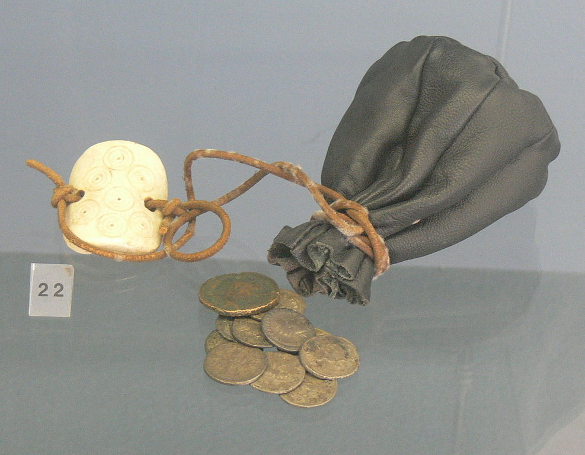
Roman Coinage
Physical Realities of Ancient Money
Using money in ancient Rome was a different kind of experience than we typically experience today, when we predominantly use paper money or just go cashless.
In ancient Rome:
- there was no paper money, only metal coins
- those coins could get heavy
- there was no equivalent to a personal savings bank
- you had to worry about where to physically put your money
But some things we would still find familiar:
- Roman coins were about they same size as ours today
- The front side held the face of the current ruler (much as we have presidents)
- The back side held an image and caption that expressed some common ideal
- Roman coins often even included the year it was minted
Roman Coin Denominations
Here are the most common types of Roman coins -- all examples from the reign of Nero!
(Click on the front image to see it larger with more detail.)
| Coin Name | Metal | Relative Value | Reverse |
| 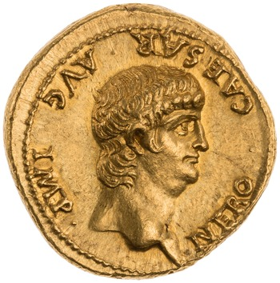 | Aureus | gold | 100 sestertii | 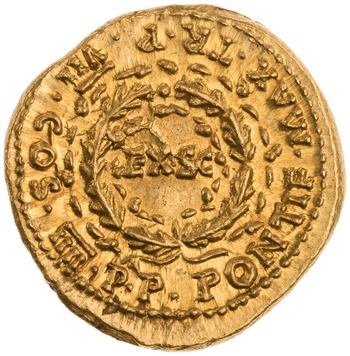 |
| 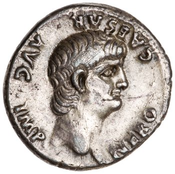 | Denarius | silver | 4 sestertii | 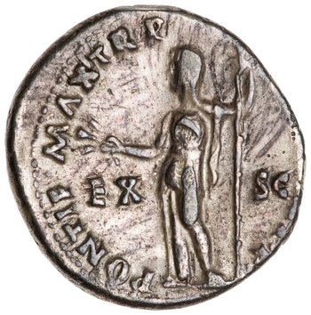 |
| 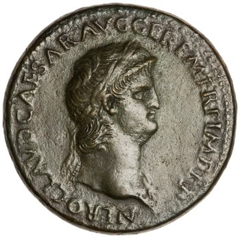 | Sestertius | brass | 1 sestertius | 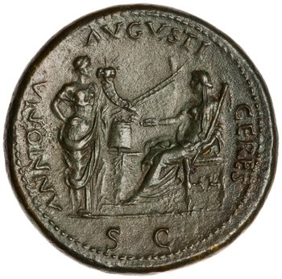 |
| 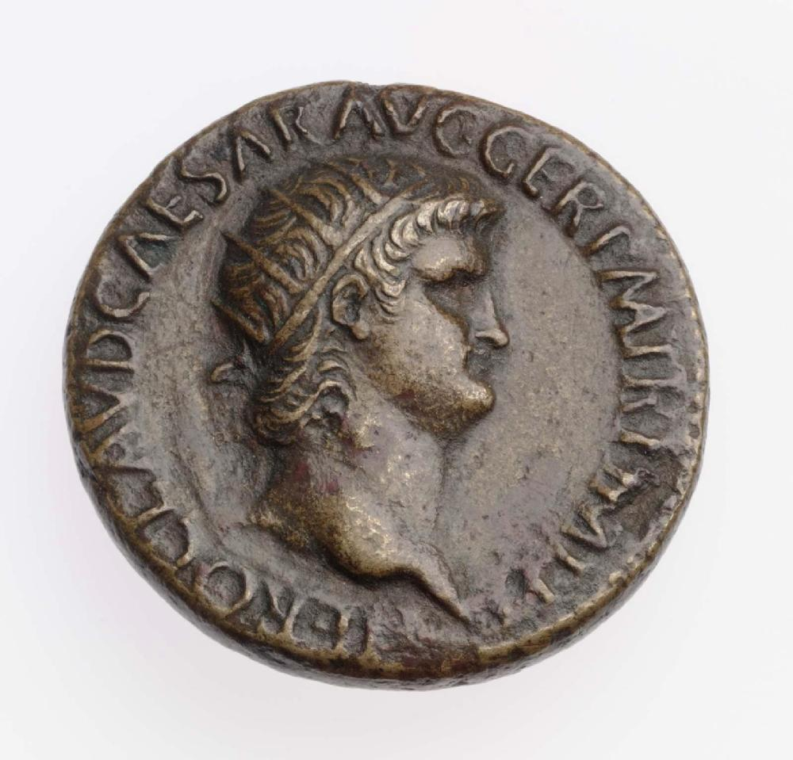 | Dupondius | brass | 1/2 sestertius | 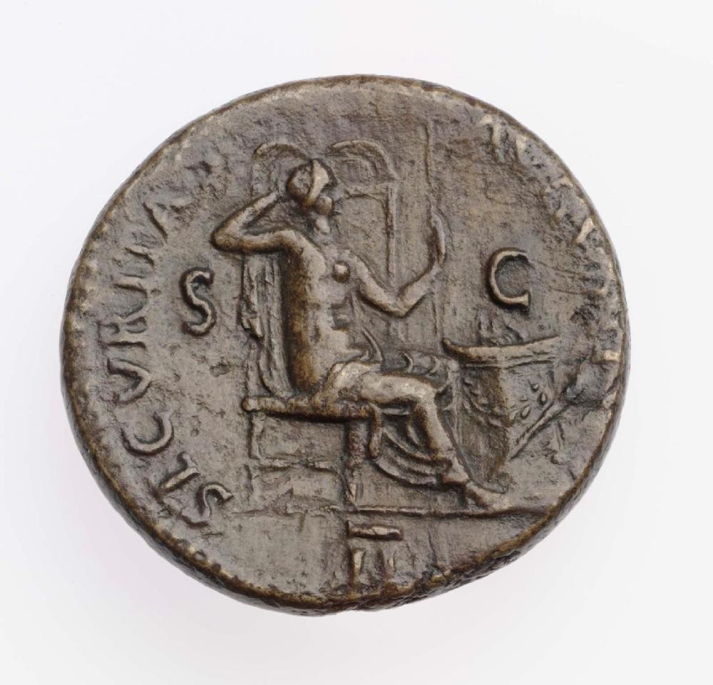 |
| 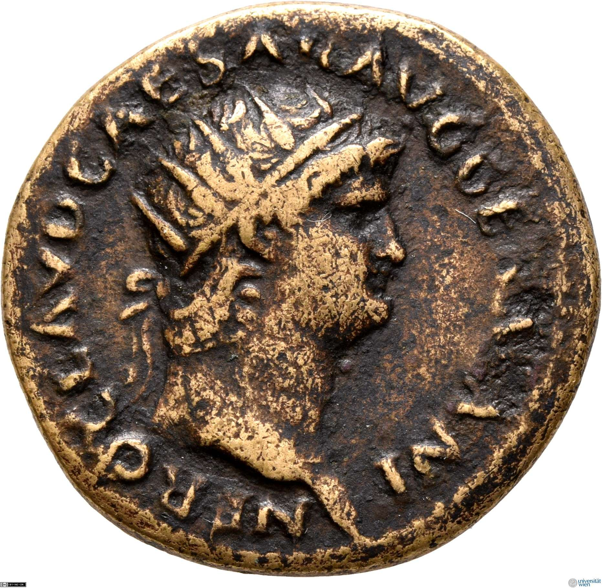 | As | copper | 1/4 sestertius | 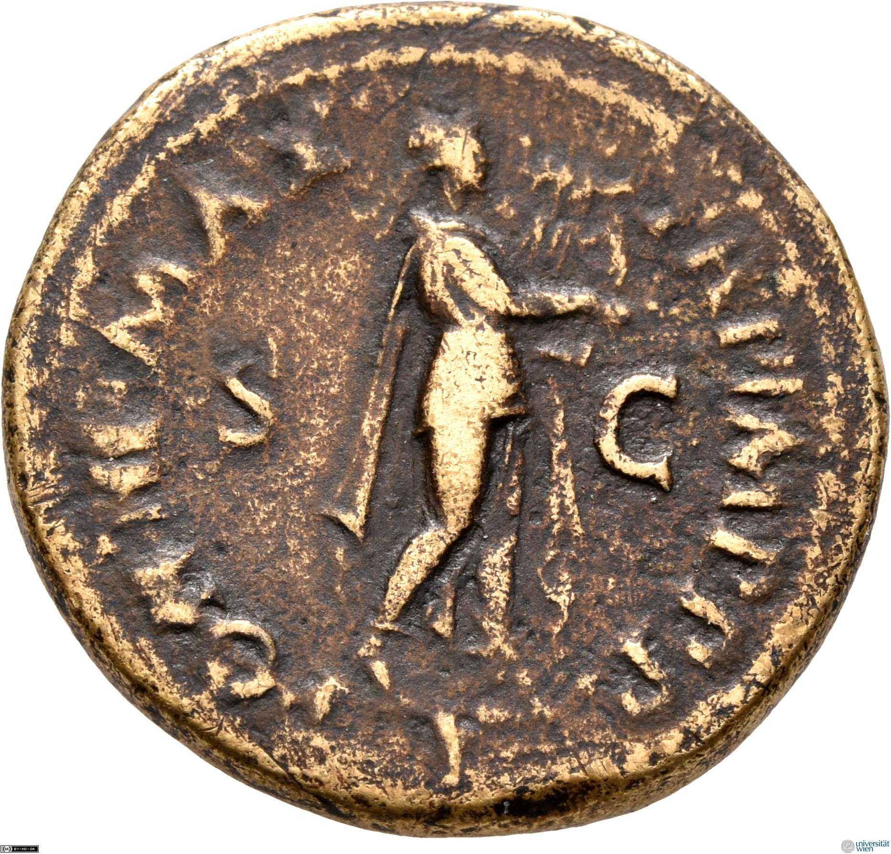 |
| 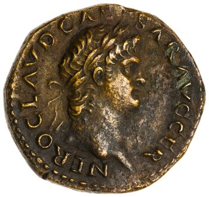 | Semis | brass | 1/8 sestertius | 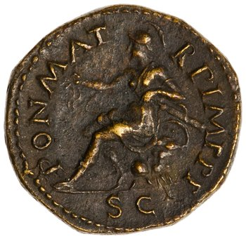 |
| 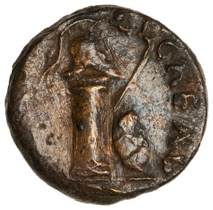 | Quadrans | brass | 1/16 sestertius | 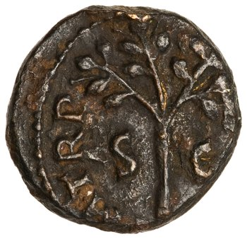 |
Buying Power in Ancient Rome
Our evidence for how much people could make per month in ancient Rome is pretty spotty, but for most people good estimates are ~30-40 sestertii / mo for unskilled labor and ~50-80 for more skilled labor. (As is true in any age, most Roman wealth was concentrated among the super-rich.)
Here are some sample costs for an ancient Roman buyer:
- Loaf of bread -- 2 asses
- Half-liter of cheap wine -- 1-5 asses
- Half-liter of good wine -- > 25 asses (= 4 or 5 sestertii)
- Tunic (typical outer garment) -- 15 sestertii (up to half of a poor person's monthly income!)
- Entrance to the public baths -- 1 quadrans (super cheap!)
- Cow -- 400-800 sestertii (not so cheap!)
- Monthly apartment rental fee -- 16-96 sestertii per month
Gallery of Coins
(All photos come from the Online Coins of the Roman Empire database)
[click the banner to explore more!]
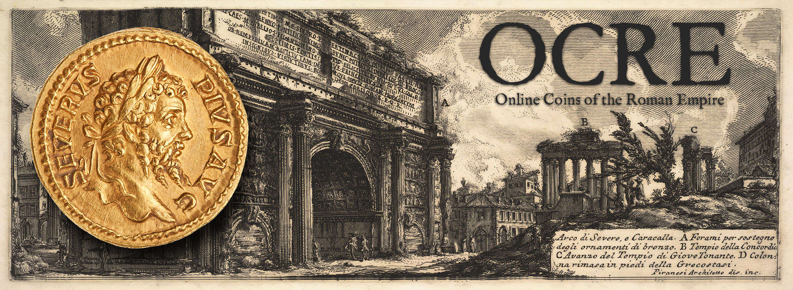
Aureus (gold)
Denarius (silver)
Sesterius (brass)
Dupondius (brass)
As (copper)
Semis (brass)
Quadrans (brass)
{kind=link}